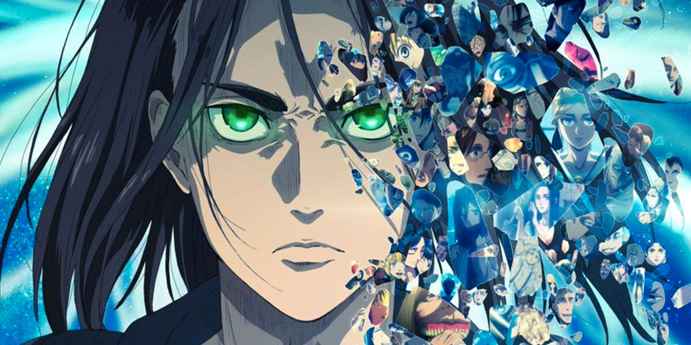
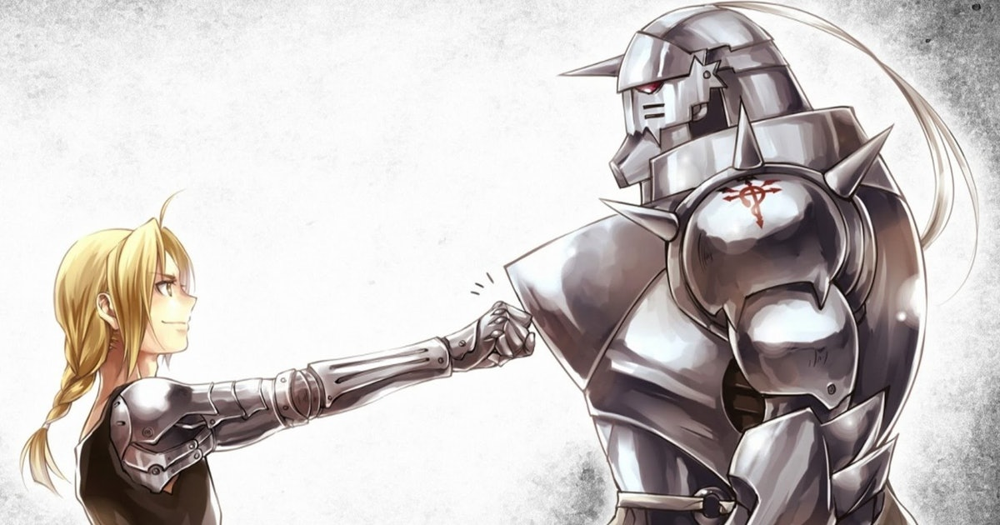
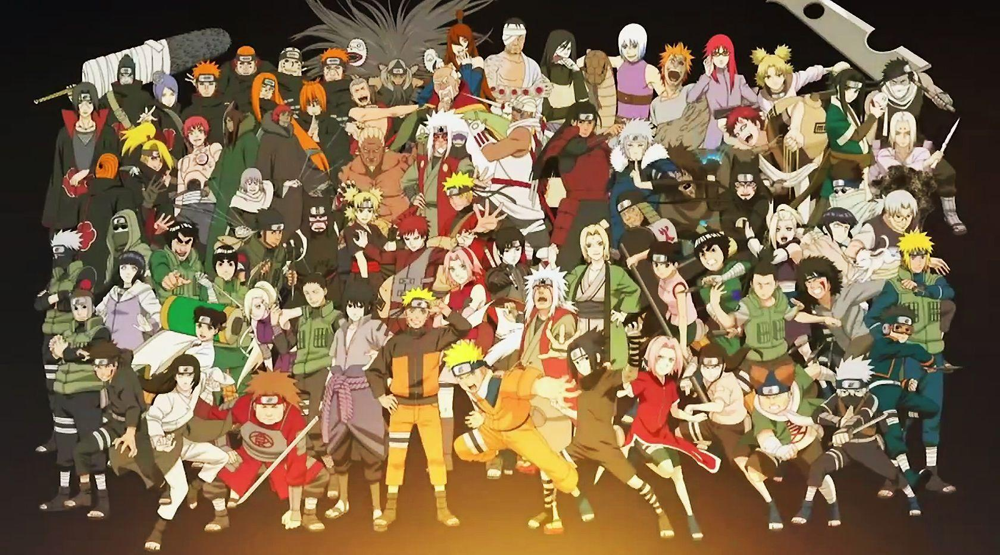
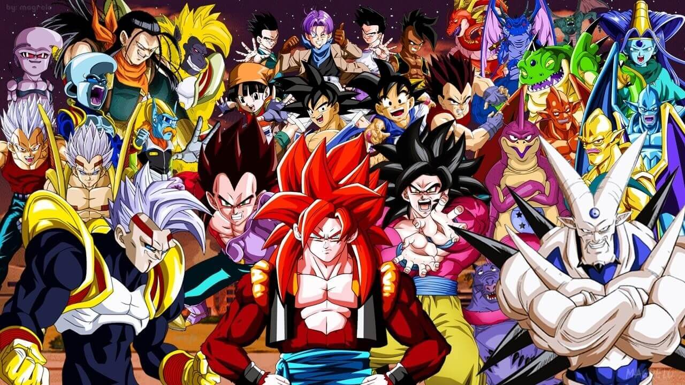

Centuries ago, mankind was slaughtered to near extinction by monstrous humanoid creatures called titans, forcing humans to hide in fear behind enormous concentric walls. What makes these giants truly terrifying is that their taste for human flesh is not born out of hunger but what appears to be out of pleasure. To ensure their survival, the remnants of humanity began living within defensive barriers, resulting in one hundred years without a single titan encounter. However, that fragile calm is soon shattered when a colossal titan manages to breach the supposedly impregnable outer wall, reigniting the fight for survival against the man-eating abominations.

After witnessing a horrific personal loss at the hands of the invading creatures, Eren Yeager dedicates his life to their eradication by enlisting into the Survey Corps, an elite military unit that combats the merciless humanoids outside the protection of the walls. Based on Hajime Isayama's award-winning manga, Shingeki no Kyojin follows Eren, along with his adopted sister Mikasa Ackerman and his childhood friend Armin Arlert, as they join the brutal war against the titans and race to discover a way of defeating them before the last walls are breached.
Brothers Edward and Alphonse Elric are raised by their mother Trisha Elric in the remote village of Resembool in the country of Amestris. Their father Hohenheim, a noted and very gifted alchemist, abandoned his family while the boys were still young, and while in Trisha's care they began to show an affinity for alchemy and became curious about its secrets. However, when Trisha died of a lingering illness, they were cared for by their best friend Winry Rockbell and her grandmother Pinako. The boys traveled the world to advance their alchemic training under Izumi Curtis. Upon returning home, the two decide to try to bring their mother back to life with alchemy. However, human transmutation is a taboo, as it is impossible to do so properly. In the failed transmutation that results in Al's body being completely obliterated, and Ed losing his left leg. In a last ditch attempt to keep his brother alive, Ed sacrifices his right arm to bring Al's soul back and houses it in a nearby suit of armor.

After Edward receives automail prosthetics from Winry and Pinako, the brothers decide to burn their childhood home down (symbolizing their determination and decision of "no turning back") and head to the capital city to become government sanctioned State Alchemists. After passing the exam, Edward is dubbed the "Fullmetal Alchemist" by the State Military, and the brothers begin their quest to regain their full bodies back through the fabled Philosopher's Stone, under the direction of Colonel Roy Mustang. Along the way, they discover a deep government conspiracy to hide the true nature of the Philosopher's Stone that involves the homunculi, the alchemists of the neighboring nation of Xing, the scarred man from the war-torn nation of Ishval, and their own father's past.
Moments prior to Naruto Uzumaki's birth, a huge demon known as the Kyuubi, the Nine-Tailed Fox, attacked Konohagakure, the Hidden Leaf Village, and wreaked havoc. In order to put an end to the Kyuubi's rampage, the leader of the village, the Fourth Hokage, sacrificed his life and sealed the monstrous beast inside the newborn Naruto.

Now, Naruto is a hyperactive and knuckle-headed ninja still living in Konohagakure. Shunned because of the Kyuubi inside him, Naruto struggles to find his place in the village, while his burning desire to become the Hokage of Konohagakure leads him not only to some great new friends, but also some deadly foes.
Ten years after leaving friends and family to hone his skills, Goku has become helpless against the mystic power of the Dragon Balls when a wish made by devious Emperor Pilaf -- that Goku become a child -- comes true. Despite the setback, Goku teams with his granddaughter, Pan, and Capsule Corp. President Trunks to go to outer space to find the missing Black Star Dragon Balls. Unknown to Goku and his team, the balls have a secret: If they are not collected within a year, Earth will be destroyed.

The Dragon Balls are collected to revive those killed by Super 17, including Krillin. However, an evil black dragon emerges and then splits into seven Shadow Dragons, who set out to punish humanity for their constant misuse of the Dragon Balls by destroying the Earth. All but the most powerful, Syn Shenron, are defeated by Goku and Pan. Syn Shenron appears to be losing until he absorbs the Dragon Balls and gains tremendous power, transforming into Omega Shenron and surpassing even Super Saiyan 4 Goku's power. Goku is about to sacrifice himself to destroy the evil dragon, but Vegeta intervenes and gains the Super Saiyan 4 transformation with help from Bulma's newest invention, the Blutz Wave Generator. Goku and Vegeta merge using the Fusion Dance technique to create Gogeta, who uses his immense power to beat Omega Shenron to a pulp. However, after being too confident in his ability to defeat Omega Shenron, he uses up too much time in an attempt to embarrass him. Gogeta then defuses and Goku and Vegeta revert to their base forms. Eventually, using the energy of every living being in the universe, Goku creates the incredibly powerful Universal Spirit Bomb (全世界の元気玉, Zensekai no Genki Dama, lit. "Energy Sphere of the Whole World") and uses it to destroy Omega Shenron once and for all.
Afterward, the real Shenron appears from the restored Dragon Balls to grant Goku and his friends one last wish to revive those killed by Super 17 and the Shadow Dragons, and then proceeds to disappear – along with Goku and the Dragon Balls. Several decades later, Goku's great-great-grandson, Goku Jr., competes in the 64th World Martial Arts Tournament against Vegeta's descendant, Vegeta Jr., as the now-elderly Pan cheers him on. Pan then sees a rejuvenated adult Goku and tries to approach him, but he quickly disappears into the crowd. Goku then leaves the World Martial Arts Tournament with a flashback covering all the events of his timeline. After the flashback ends, Goku then catches his Power Pole and rides off on his Flying Nimbus cloud, bringing the story of Dragon Ball to an end.